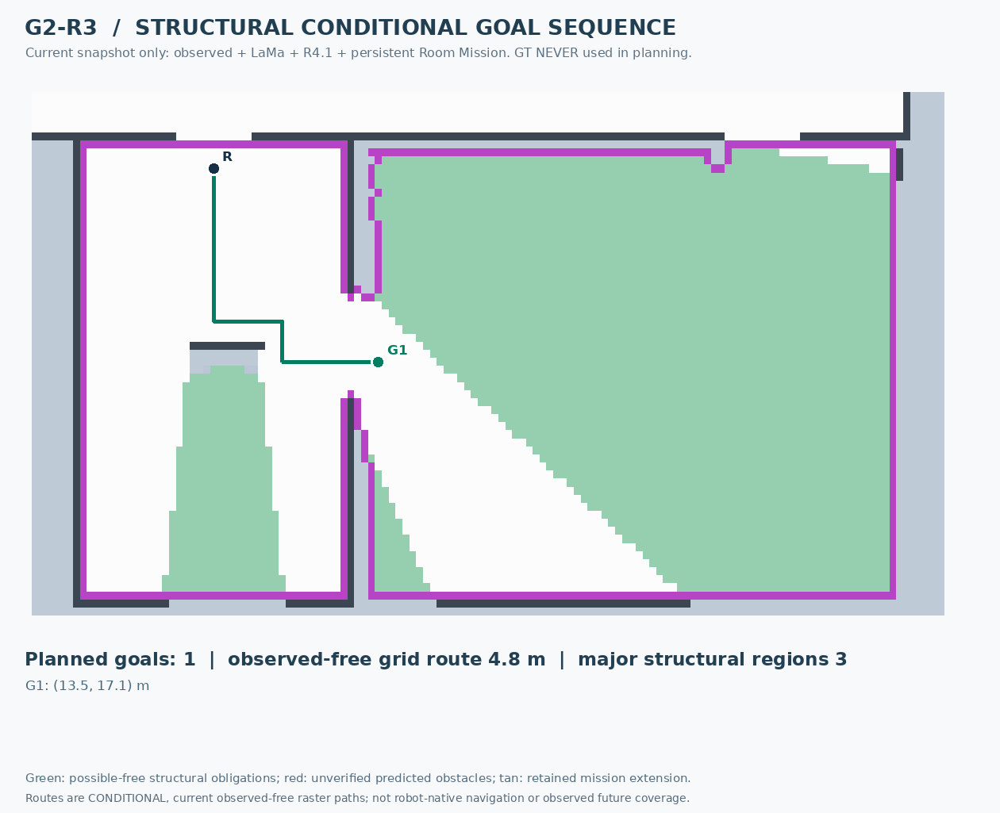
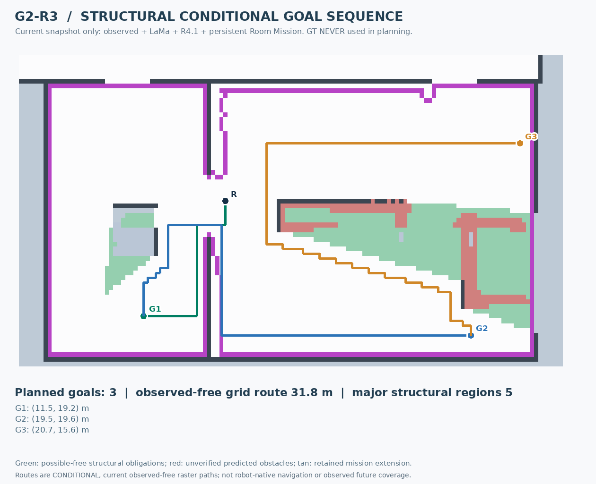
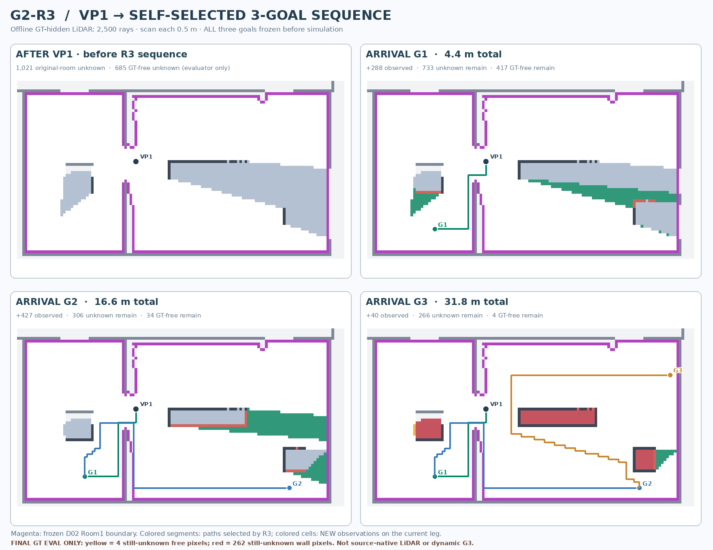

G2-R3 — Room Structural Sequence Planning: D02 and VP1
R3 Stage B current-map planning only. D02 chose 1 goal (13.5,17.1), 4.8 m. Independently at the previously observed manual VP1, R3 chose a 3-goal chain (11.5,19.2) → (19.5,19.6) → (20.7,15.6), totaling 31.8 m. GT was used ONLY by a separate frozen-path LiDAR evaluator after choices were locked.
1. D02 initial — G2-R3 picks 1 viewpoint

2. After VP1 — G2-R3 picks 3 viewpoints

3. Offline LiDAR observation after selected R3 goals

Frozen-chain offline evaluator
| State | Travel from VP1 | Original-room unknown | GT-free remaining (evaluation only) |
|---|
| VP1 | 0 m | 1021 | 685 |
| G1 | 4.4 m | 733 | 417 |
| G2 | 16.6 m | 306 | 34 |
| G3 | 31.8 m | 266 | 4 |
This is NOT an autonomous D02-to-finish rollout: the VP1 snapshot comes from the earlier manual VP1 experiment, and the R3 3-goal chain was frozen during the sensor evaluation. Only 31/31 synthetic QA and one room offline demonstration have been completed. Read full method and QA.